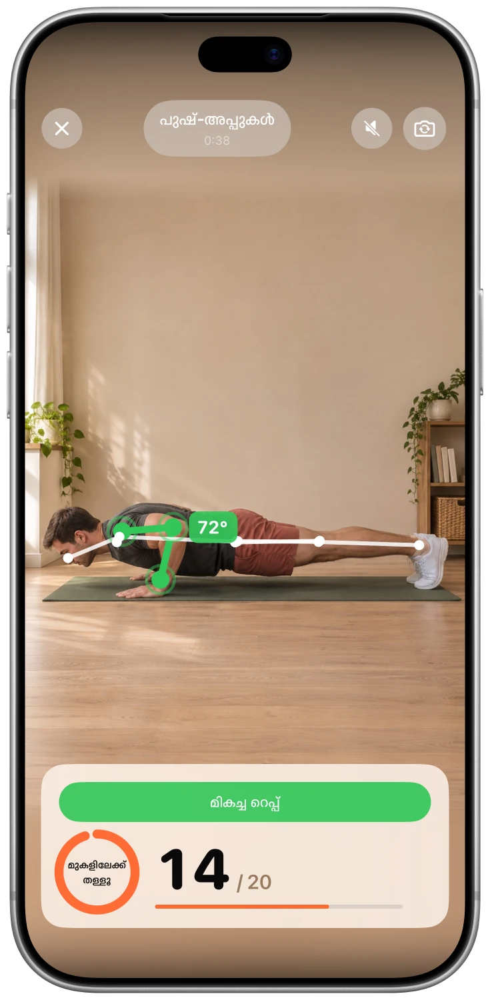
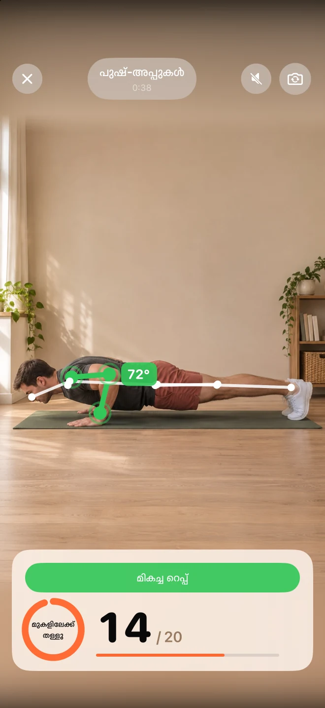
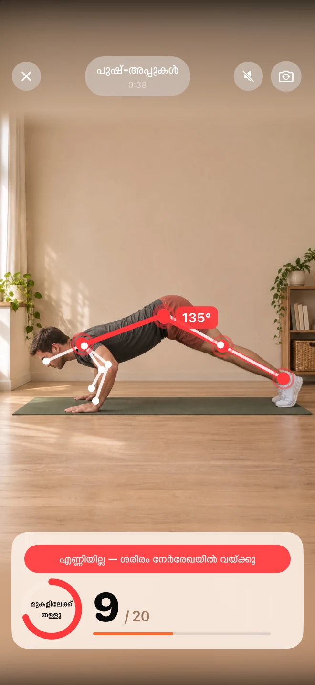
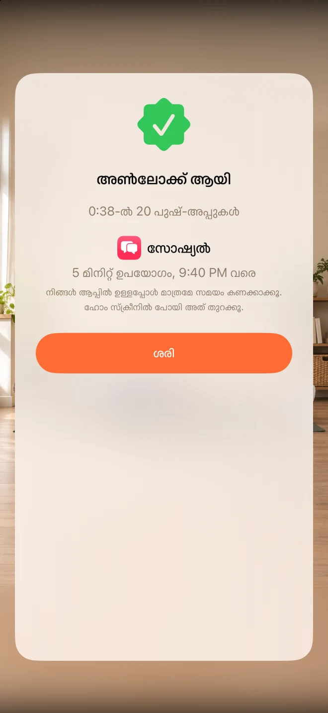

നിങ്ങളുടെ ശ്രദ്ധ തിരിക്കുന്ന കാര്യങ്ങൾ തിരഞ്ഞെടുക്കുക
നിങ്ങൾക്ക് കുറച്ചധികം ദൂരം നിലനിർത്താൻ ആഗ്രഹിക്കുന്ന ആപ്ലിക്കേഷനുകൾ തിരഞ്ഞെടുക്കുക. ആ ആപ്ലിക്കേഷനുകൾ ലോക്ക് ചെയ്യാൻ Unlocky, Apple-ന്റെ Screen Time ഉപയോഗിക്കുന്നു.
ഫീഡിന് മുമ്പ് കുറച്ച് ചലനം
കുറഞ്ഞ ഓട്ടോപൈലറ്റ്. കൂടുതൽ നിങ്ങളായിരിക്കുക.
നിങ്ങളുടെ സമയം നഷ്ടമാക്കുന്ന ആപ്ലിക്കേഷനുകൾ ലോക്ക് ചെയ്യുക. കുറച്ച് പുഷ്-അപ്പുകൾ, സ്ക്വാട്ടുകൾ അല്ലെങ്കിൽ ജമ്പിംഗ് ജാക്കുകൾ ചെയ്ത് കുറച്ച് സമയം തിരികെ നേടുക.
സൗജന്യം · സബ്സ്ക്രിപ്ഷൻ ആവശ്യമില്ല · അക്കൗണ്ട് ആവശ്യമില്ല


ആപ്പ് സ്ക്രീൻഷോട്ട്
എന്തുകൊണ്ട് ഇത് നിങ്ങൾക്ക് ഇഷ്ടപ്പെടും
നിങ്ങൾക്ക് കുറച്ചധികം ദൂരം നിലനിർത്താൻ ആഗ്രഹിക്കുന്ന ആപ്ലിക്കേഷനുകൾ തിരഞ്ഞെടുക്കുക. ആ ആപ്ലിക്കേഷനുകൾ ലോക്ക് ചെയ്യാൻ Unlocky, Apple-ന്റെ Screen Time ഉപയോഗിക്കുന്നു.
പുഷ്-അപ്പുകൾ, സ്ക്വാറ്റുകൾ അല്ലെങ്കിൽ ജമ്പിംഗ് ജാക്സ് എന്നിവ തിരഞ്ഞെടുക്കുക. നിങ്ങൾ അനങ്ങുമ്പോൾ, നിങ്ങളുടെ ഐഫോൺ ക്യാമറ, നിങ്ങൾ എത്ര തവണ ചെയ്തു എന്ന് കണക്കാക്കുകയും, തത്സമയ ഫീഡ്ബാക്ക് നൽകുകയും ചെയ്യും.
നിങ്ങളുടെ സ്വന്തം റിവാർഡുകളും, ദിവസേനയുള്ള പരിധിയും നിശ്ചയിക്കുക. ആപ്ലിക്കേഷൻ ഉപയോഗിക്കുമ്പോൾ നേടിയ മിനിറ്റുകൾ കണക്കാക്കപ്പെടും, തുടർന്ന് ലോക്ക് വീണ്ടും വരും.
ഒന്ന് നോക്കൂ
യഥാർത്ഥ സ്ക്രീനുകൾ. ഉള്ളിലെ കാര്യങ്ങൾ കൂടുതൽ വ്യക്തമായി അറിയാൻ ഇത് സഹായിക്കും.



FAQ
നിങ്ങൾ ആരംഭിക്കുന്നതിന് മുമ്പ് ഉത്തരങ്ങൾ
Unlocky ആപ്പിളിന്റെ Screen Time ഉപയോഗിക്കുന്നു. സജ്ജീകരണ സമയത്ത് ആപ്പുകൾ തിരഞ്ഞെടുത്ത് അനുമതി നൽകാം. iPhone ക്രമീകരണങ്ങളിൽ ഈ അനുമതി എപ്പോൾ വേണമെങ്കിലും പിൻവലിക്കാം.
Unlocky നിങ്ങളെ റെക്കോർഡ് ചെയ്യുന്നില്ല. ക്യാമറ ഫ്രെയിമുകൾ നിങ്ങളുടെ iPhone-ൽ തന്നെ തത്സമയം വിശകലനം ചെയ്യുന്നു. വീഡിയോകളും ഫോട്ടോകളും സൂക്ഷിക്കുകയോ അപ്ലോഡ് ചെയ്യുകയോ ചെയ്യുന്നില്ല.
അതെ. പുഷ്-അപ്പുകൾ, സ്ക്വാറ്റുകൾ അല്ലെങ്കിൽ ജമ്പിംഗ് ജാക്സ് എന്നിവ തിരഞ്ഞെടുക്കുക. ഒരു സെറ്റ് പൂർത്തിയാക്കാൻ എത്ര മിനിറ്റ് വേണമെന്ന് നിശ്ചയിക്കുക. ഒരു ദിവസത്തിൽ എത്ര മിനിറ്റ് വരെ ചെയ്യാമെന്ന് നിശ്ചയിക്കുന്നത്, നിങ്ങൾ ഒരു പരിധിക്കുള്ളിൽ തുടരാൻ സഹായിക്കും.
അതെ. Unlocky-ക്ക് സബ്സ്ക്രിപ്ഷനോ, പണം നൽകേണ്ട മറ്റ് ഫീച്ചറുകളോ ഇല്ല. ഇതിന് iOS 17 അല്ലെങ്കിൽ അതിന് ശേഷമുള്ള പതിപ്പുള്ള ഒരു ഐഫോൺ ആവശ്യമാണ്.
സൗജന്യം · സബ്സ്ക്രിപ്ഷൻ ആവശ്യമില്ല · അക്കൗണ്ട് ആവശ്യമില്ല
നിങ്ങളുടെ ഇഷ്ടത്തിനനുസരിച്ച് വേഗതയിൽ അനങ്ങുക, എന്തെങ്കിലും വേദന തോന്നിയാൽ നിർത്തുക. നിങ്ങൾക്ക് ആരോഗ്യ പ്രശ്നങ്ങളുണ്ടെങ്കിൽ, പുതിയ വ്യായാമ രീതി ആരംഭിക്കുന്നതിന് മുമ്പ് ഒരു ഡോക്ടറെ സമീപിക്കുക.